Questions are often taken from here the stackoverflow dendrogram tag.
Asked (http://stackoverflow.com/questions/27485549/how-to-colour-the-labels-of-a-dendrogram-by-an-additional-factor-variable-in-r)[here].
Solution: use the labels_colors function.
# install.packages("dendextend")
library(dendextend)
dend <- as.dendrogram(hclust(dist(USArrests[1:5,])))
# Like:
# dend <- USArrests[1:5,] %>% dist %>% hclust %>% as.dendrogram
# By default, the dend has no colors to the labels
labels_colors(dend)## NULLpar(mfrow = c(1,2))
plot(dend, main = "Original dend")
# let's add some color:
labels_colors(dend) <- 1:5
# Now each state has a color
labels_colors(dend) ## Arkansas Arizona California Alabama Alaska
## 1 2 3 4 5plot(dend, main = "A color for every state")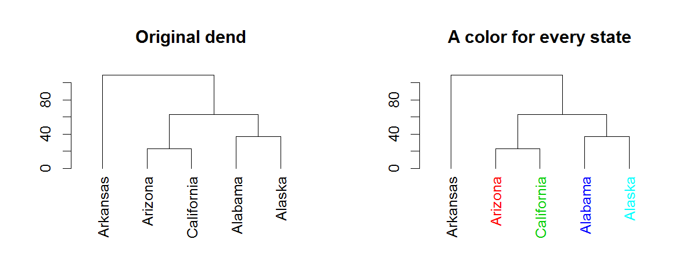
Instead of using 1:5, we can obviously use colors that are based on another factor (organized): the labels themselves. But in such a case, we want to map between the order of the labels and the order of the items in the original dataset. Here is another example based on the iris dataset:
# install.packages("dendextend")
library(dendextend)
small_iris <- iris[c(1, 51, 101, 2, 52, 102), ]
dend <- as.dendrogram(hclust(dist(small_iris[,-5])))
# Like:
# dend <- small_iris[,-5] %>% dist %>% hclust %>% as.dendrogram
# By default, the dend has no colors to the labels
labels_colors(dend)## NULLpar(mfrow = c(1,2))
plot(dend, main = "Original dend")
# Let's add some color:
colors_to_use <- as.numeric(small_iris[,5])
colors_to_use## [1] 1 2 3 1 2 3# But sort them based on their order in dend:
colors_to_use <- colors_to_use[order.dendrogram(dend)]
colors_to_use## [1] 1 1 2 2 3 3# Now we can use them
labels_colors(dend) <- colors_to_use
# Now each state has a color
labels_colors(dend) ## 1 2 51 52 101 102
## 1 1 2 2 3 3plot(dend, main = "A color for every Species")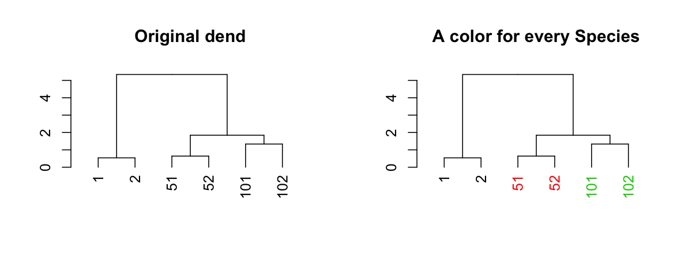
Asked (http://stackoverflow.com/questions/31117849/how-to-color-a-dendrograms-labels-according-to-defined-groups-in-r)[here].
Solution: use the color_labels function.
I suspect the function you are looking for is either color_labels or get_leaves_branches_col. The first color your labels based on cutree (like color_branches do) and the second allows you to get the colors of the branch of each leaf, and then use it to color the labels of the tree (if you use unusual methods for coloring the branches (as happens when using branches_attr_by_labels). For example:
# define dendrogram object to play with:
hc <- hclust(dist(USArrests[1:5,]), "ave")
dend <- as.dendrogram(hc)
library(dendextend)
par(mfrow = c(1,2), mar = c(5,2,1,0))
dend <- dend %>%
color_branches(k = 3) %>%
set("branches_lwd", c(2,1,2)) %>%
set("branches_lty", c(1,2,1))
plot(dend)
dend <- color_labels(dend, k = 3)
# The same as:
# labels_colors(dend) <- get_leaves_branches_col(dend)
plot(dend)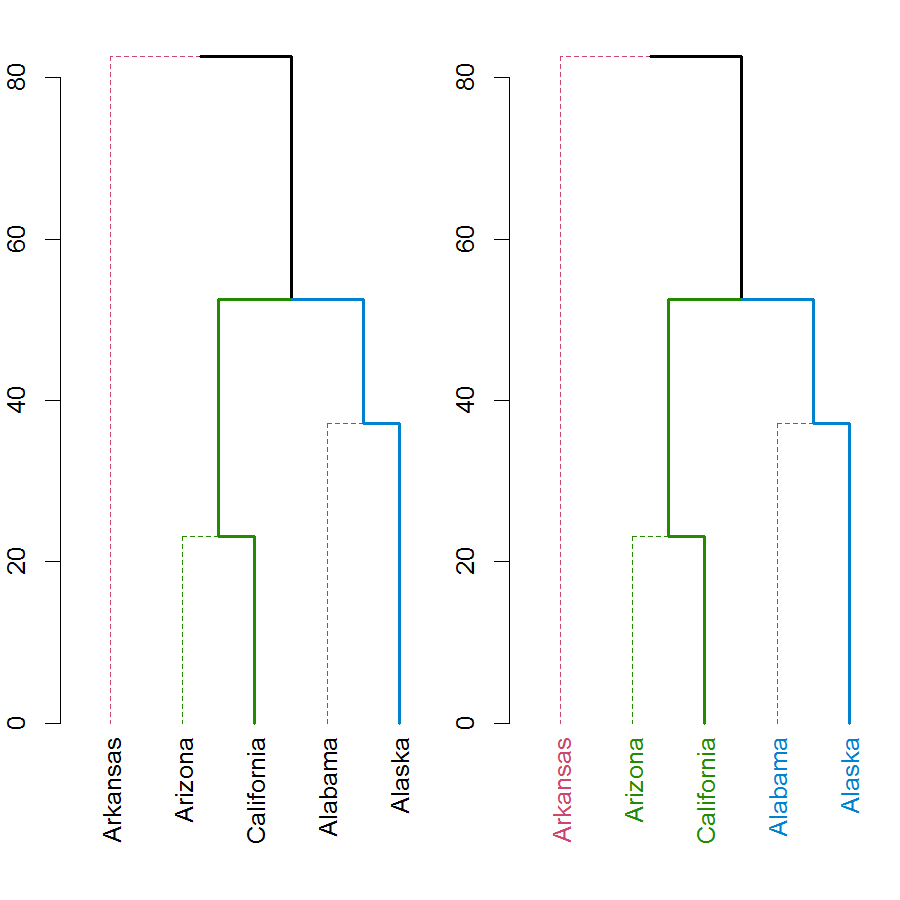
Either way, you should always have a look at the set function, for ideas on what can be done to your dendrogram (this saves the hassle of remembering all the different functions names).
Use the color_branches and color_labels functions, with the k (orh) parameter:
# install.packages("dendextend")
library(dendextend)
dend <- as.dendrogram(hclust(dist(USArrests[1:5,])))
# Like:
# dend <- USArrests[1:5,] %>% dist %>% hclust %>% as.dendrogram
dend1 <- color_branches(dend, k = 3)
dend2 <- color_labels(dend, k = 3)
par(mfrow = c(1,2))
plot(dend1, main = "Colored branches")
plot(dend2, main = "Colored labels")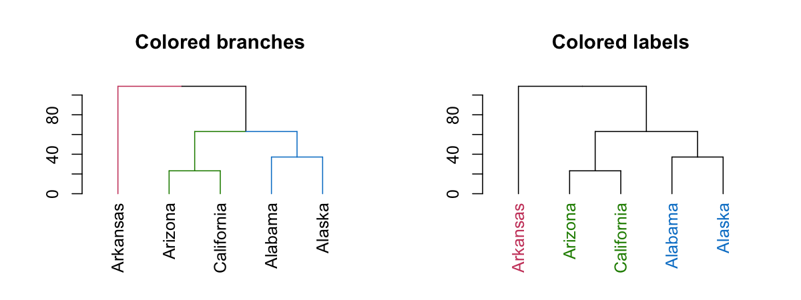
Use the left assign labels<- function:
# install.packages("dendextend")
library(dendextend)
dend <- as.dendrogram(hclust(dist(USArrests[1:5,])))
# Like:
# dend <- USArrests[1:5,] %>% dist %>% hclust %>% as.dendrogram
labels(dend)## [1] "Arkansas" "Arizona" "California" "Alabama" "Alaska"## [1] 1 2 3 4 5Asked (http://stackoverflow.com/questions/26965390/larger-font-and-spacing-between-leaves-in-r-dendrogram)[here].
Solution: use the set function, with the “labels_cex” parameter.
# install.packages("dendextend")
library(dendextend)
dend <- as.dendrogram(hclust(dist(USArrests[1:5,])))
# Like:
# dend <- USArrests[1:5,] %>% dist %>% hclust %>% as.dendrogram
# By default, the dend has no text size to it (showing only the first leaf)
get_leaves_nodePar(dend)[[1]]## [1] NApar(mfrow = c(1,2), mar = c(10,4,4,2))
plot(dend, main = "Original dend")
# let's increase the size of the labels:
dend <- set(dend, "labels_cex", 2)
# Now each state has a larger label
get_leaves_nodePar(dend)[[1]]## $lab.cex
## [1] 2
##
## $pch
## [1] NAplot(dend, main = "A larger font for labels")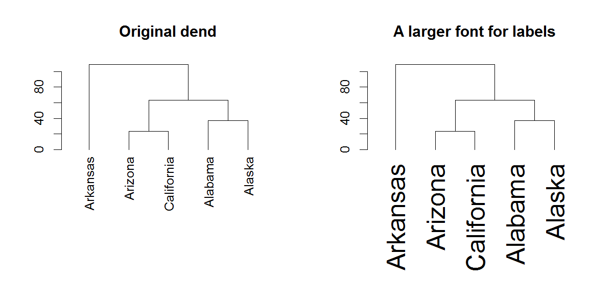
(Note that changing the spacing between the labels is currently not implemented)
Asked (http://stackoverflow.com/questions/26240200/how-to-access-attributes-of-a-dendrogram-in-r)[here], and (http://stackoverflow.com/questions/25664911/r-hclust-height-of-final-merge)[here].
It generally depends on which attribute we want to view. For “midpoint” (or height) use the get_nodes_attr function, with the “midpoint” parameter.
# install.packages("dendextend")
library(dendextend)
dend <- as.dendrogram(hclust(dist(USArrests[1:5,])))
# Like:
# dend <- USArrests[1:5,] %>% dist %>% hclust %>% as.dendrogram
# midpoint for all nodes
get_nodes_attr(dend, "midpoint")## [1] 1.25 NA 1.50 0.50 NA NA 0.50 NA NA# Perhaps also for the height:
get_nodes_attr(dend, "height")## [1] 108.85192 0.00000 63.00833 23.19418 0.00000 0.00000 37.17701
## [8] 0.00000 0.00000To also change an attribute, you can use the various assign functions from the package: assign_values_to_leaves_nodePar, assign_values_to_leaves_edgePar, assign_values_to_nodes_nodePar, assign_values_to_branches_edgePar, remove_branches_edgePar, remove_nodes_nodePar
Asked (http://stackoverflow.com/questions/29265536/how-to-color-the-branches-and-tick-labels-in-the-heatmap-2?)[here].
Solution: use the color_branches function (or the set function, with the “branches_k_color”, “k”, and “value” parameters).
(Getting the data for this example is from the (http://stackoverflow.com/questions/29265536/how-to-color-the-branches-and-tick-labels-in-the-heatmap-2)[original SO question])
test <- test0
rnames <- test[,1]
test <- data.matrix(test[,2:ncol(test)]) # to matrix
rownames(test) <- rnames
test <- scale(test, center=T, scale=T) # data standarization
test <- t(test) # transpose
## Creating a color palette & color breaks
my_palette <- colorRampPalette(c("forestgreen", "yellow", "red"))(n = 299)
col_breaks = c(seq(-1,-0.5,length=100), # forestgreen
seq(-0.5,0.5,length=100), # yellow
seq(0.5,1,length=100)) # red
# distance & hierarchical clustering
distance = dist(test, method ="euclidean")
hcluster = hclust(distance, method ="ward.D")
dend1 <- as.dendrogram(hcluster)
# Get the dendextend package
if(!require(dendextend)) install.packages("dendextend")
library(dendextend)
# get some colors
cols_branches <- c("darkred", "forestgreen", "orange", "blue")
# Set the colors of 4 branches
dend1 <- color_branches(dend1, k = 4, col = cols_branches)
# or with:
# dend1 <- set(dend1, "branches_k_color", k = 4, value = cols_branches)
# Get the colors of the tips of the dendrogram:
# col_labels <- cols_branches[cutree(dend1, k = 4)] # this may need tweaking in various cases - the following is a more general solution.
col_labels <- get_leaves_branches_col(dend1)
# But due to the way heatmap.2 works - we need to fix it to be in the
# order of the data!
col_labels <- col_labels[order(order.dendrogram(dend1))]
dend1
# plot(dend1)
# a <- heights_per_k.dendrogram(dend1)
# library(dendextendRcpp)
# a2 <- heights_per_k.dendrogram(dend1)
# nleaves(dend1)
# Creating Heat Map
# if(!require(gplots)) install.packages("gplots")
library(gplots)
heatmap.2(test,
main = paste( "test"),
trace="none",
margins =c(5,7),
col=my_palette,
breaks=col_breaks,
dendrogram="row",
Rowv = dend1,
Colv = "NA",
key.xlab = "Concentration (index)",
cexRow =0.6,
cexCol = 0.8,
na.rm = TRUE,
RowSideColors = col_labels # to add nice colored strips
# colRow = col_labels # to add nice colored labels - only for qplots 2.17.0 and higher
) If you are developing a package and you wish to use dendextend as an imported package, that is - without loading it to the search path, you should run:
dendextend::assign_dendextend_options()
# This populates the dendextend::dendextend_options() spaceBefore using any of its function (for example: dendextend::color_branches ). As of dendextend version 1.0.0, this is no longer required.
Asked (http://stats.stackexchange.com/questions/4062/how-to-plot-a-fan-polar-dendrogram-in-r)[here].
Solution: use the circlize_dendrogram function.
# install.packages("dendextend")
# install.packages("circlize")
library(dendextend)
library(circlize)
# create a dendrogram
hc <- hclust(dist(datasets::mtcars))
dend <- as.dendrogram(hc)
# modify the dendrogram to have some colors in the branches and labels
dend <- dend %>%
color_branches(k=4) %>%
color_labels
# plot the radial plot
par(mar = rep(0,4))
# circlize_dendrogram(dend, dend_track_height = 0.8)
circlize_dendrogram(dend, labels_track_height = NA, dend_track_height = .3) 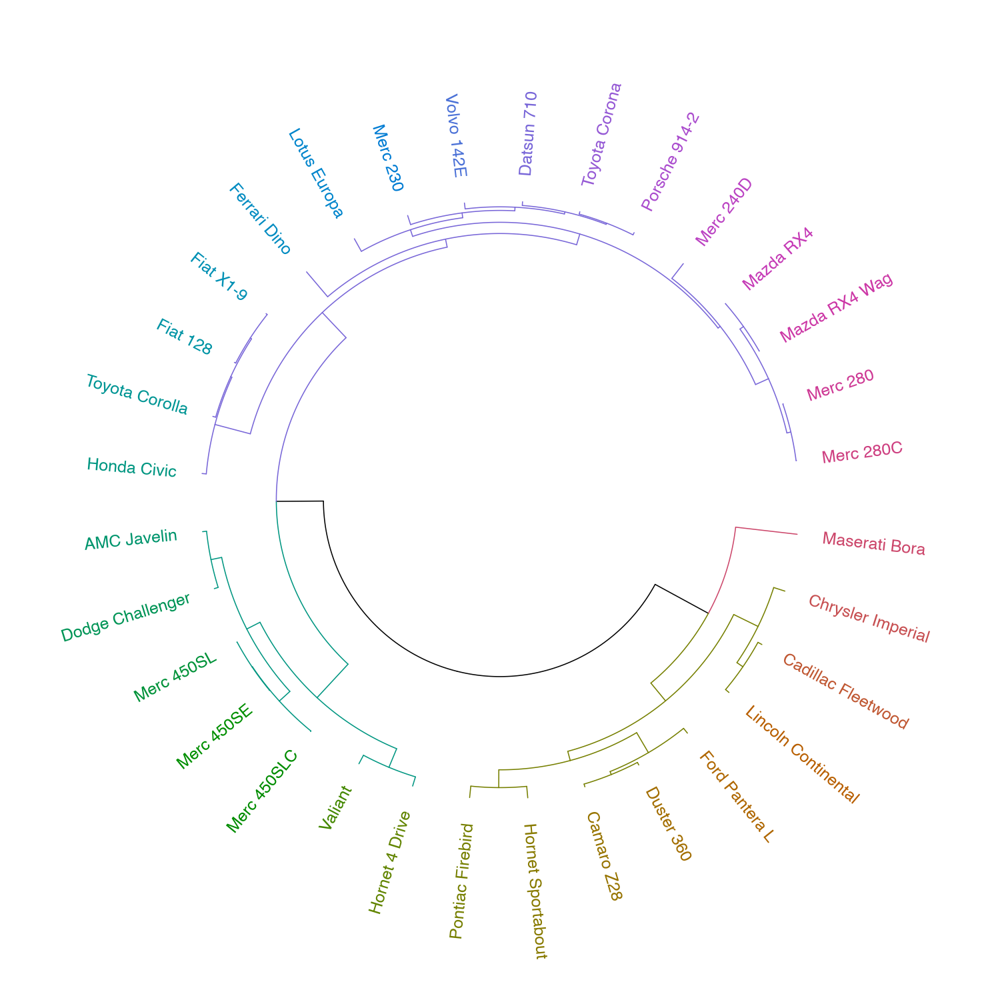
Asked (http://stackoverflow.com/questions/31124810/r-cut-dendrogram-into-groups-with-minimum-size/)[here].
Solution: use the heights_per_k.dendrogram function.
This feature is available in the dendextend package with the heights_per_k.dendrogram function (which also has a faster C++ implementation when loading the dendextendRcpp function).
hc <- hclust(dist(USArrests[1:4,]), "ave")
dend <- as.dendrogram(hc)
heights_per_k.dendrogram(dend)## 1 2 3 4
## 86.47086 68.84745 45.98871 28.36531As a sidenote, the dendextend package has a cutree.dendrogram S3 method for dendrograms (which works very similarly to cutree for hclust objects).
Asked (http://stackoverflow.com/questions/30062187/coloring-dendrogram-s-end-branches-or-leaves-based-on-column-number-of-data-fr)[here].
Solution: use the assign_values_to_leaves_edgePar function.
aa1 <- c(2,4,6,8)
bb1 <- c(1,3,7,11)
aa2 <- c(3,6,9,12)
bb2 <- c(3,5,7,9)
data.main <- data.frame(aa1,bb1,aa2,bb2)
d1 <- dist(t(data.main))
hcl1 <- hclust(d1)
# plot(hcl1)
dend <- as.dendrogram(hcl1)
col_aa_red <- ifelse(grepl("aa", labels(dend)), "red", "blue")
dend2 <- assign_values_to_leaves_edgePar(dend=dend, value = col_aa_red, edgePar = "col")
plot(dend2)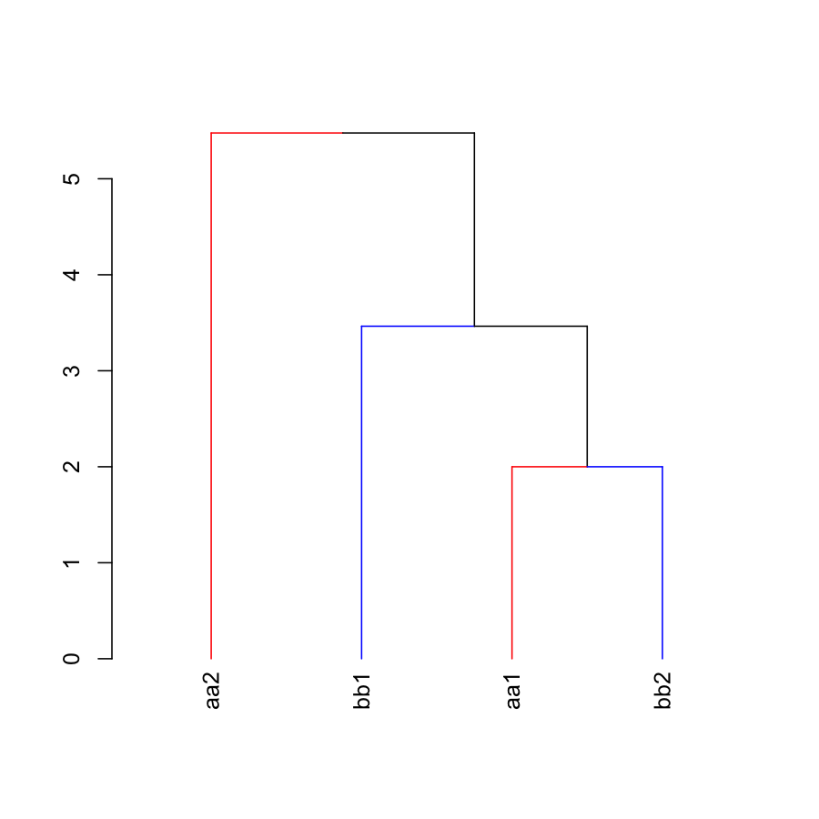
Asked (http://stackoverflow.com/questions/34539746/color-side-bar-dendrogram-plot/)[here].
Solution: use the color_branches function.
Example using mtcars:
## mtcars example
# Create the dend:
dend <- as.dendrogram(hclust(dist(mtcars)))
# Create a vector giving a color for each car to which company it belongs to
car_type <- rep("Other", length(rownames(mtcars)))
is_x <- grepl("Merc", rownames(mtcars))
car_type[is_x] <- "Mercedes"
is_x <- grepl("Mazda", rownames(mtcars))
car_type[is_x] <- "Mazda"
is_x <- grepl("Toyota", rownames(mtcars))
car_type[is_x] <- "Toyota"
car_type <- factor(car_type)
n_car_types <- length(unique(car_type))
cols_4 <- colorspace::rainbow_hcl(n_car_types, c = 70, l = 50)
col_car_type <- cols_4[car_type]
# extra: showing the various clusters cuts
k234 <- cutree(dend, k = 2:4)
# color labels by car company:
labels_colors(dend) <- col_car_type[order.dendrogram(dend)]
# color branches based on cutting the tree into 4 clusters:
dend <- color_branches(dend, k = 4)
### plots
par(mar = c(12,4,1,1))
plot(dend)
colored_bars(cbind(k234[,3:1], col_car_type), dend, rowLabels = c(paste0("k = ", 4:2), "Car Type"))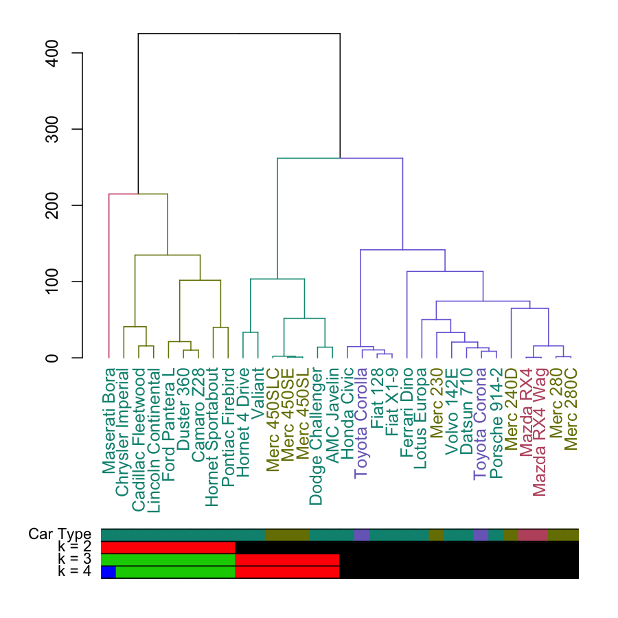
# horiz version:
# dend <- sort(dend)
par(mar = c(4,1,1,12))
plot(dend, horiz = TRUE)
colored_bars(cbind(k234[,3:1], col_car_type), dend, rowLabels = c(paste0("k = ", 4:2), "Car Type"), horiz = TRUE)
legend("topleft", legend = levels(car_type), fill = cols_4)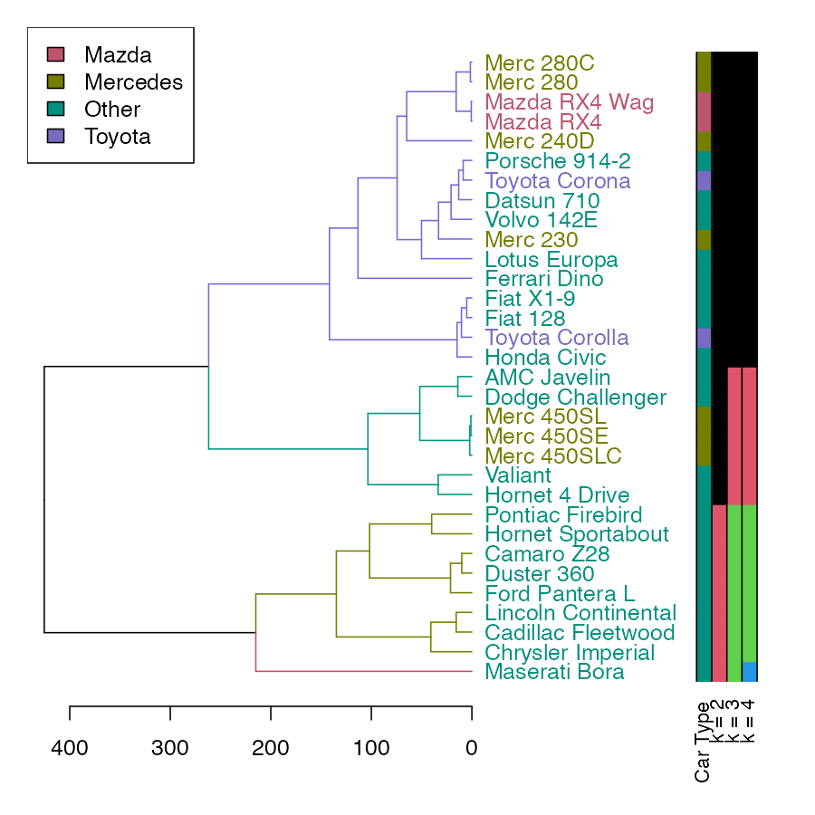
Asked (https://github.com/talgalili/dendextend/issues/29)[here].
Solution: use the plot_horiz.dendrogram function.
Example using USArrests:
# Create the dend:
hc <- hclust(dist(USArrests), "ave")
d <- as.dendrogram(hc)
library(dendextend)
d <- d %>% color_branches(k=3) %>% color_labels
# horiz normal version
par(mar = c(3,1,1,7))
plot(d, horiz = TRUE)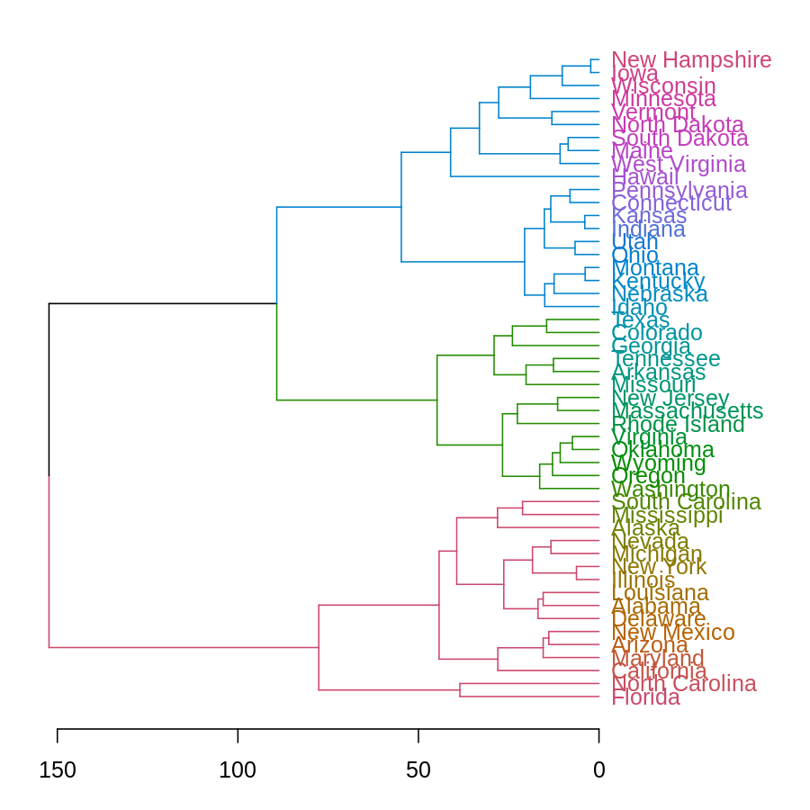
# horiz mirror version
par(mar = c(3,7,1,1))
plot_horiz.dendrogram(d, side = TRUE)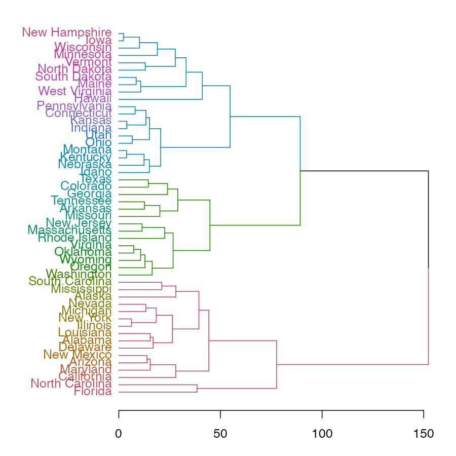